|
| f が f 自身を呼出す |
ある関数 f の定義の中に f 自身を呼び出している箇所があるとき、その呼び出しを再帰呼出し(recursive call)と言います。また、そのような定義は再帰的(recursive)である、と言います。
|
|
| f が f 自身を呼出す |
再帰呼出しと言っても、呼出しのための特別な構文があるわけではなく、普通に関数を呼出すだけです。呼出す側と呼出される側がたまたま同じ関数になっているだけのことです。しかし、再帰呼出しには特別な魅力があります。何かの処理をくり返したいようなとき、for 文や while 文のようなくり返し構文を使うことが多いわけですが、そうした構文を使わずに再帰的な定義により計算することも可能です。実際、ある種の処理はくり返しを使うよりも再帰的に定義したほうが自然かつ簡潔に記述できることがあります。
この章では、再帰的な関数定義の比較的簡単な例を学びます。
再帰呼出しの簡単な例としてよく引合いに出されるのが階乗 n! の計算です。 念のために書いておくと、n! = n × (n - 1) × (n - 2) × … × 1 であって、 0! = 1 と定義されています。例えば、3! = 3 × 2 × 1 = 6 となります。n が負の場合、n! は普通定義されません。
n を受け取って n! を返す関数 fact を再帰的に定義してみると、次のようになります。
#include <stdio.h>
int fact(int n)
{
int m;
if (n == 0)
return 1; // 0! = 1
/* 以下、n が 0 でないとき */
m = fact(n - 1); // (n-1)! を求めてそれを m とおく。ここのfact(n-1)が再帰呼出し。
return n * m; // n! = n * m
}
int main()
{
int i, ans;
scanf("%d", &i);
ans = fact(i);
printf("%dの階乗は%d.\n", i, ans);
return 0;
}
fact の定義の中に、fact(n-1)という形でfact自身を呼出している箇所があるので、factの定義は再帰的であることに注意して下さい。
上のプログラムを fact.c というファイルに記述して、コンパイル・実行してみると次のようになります。
cc2001(82)% cc -o fact fact.c cc2001(83)% ./fact 3 ←ユーザからの入力 3の階乗は6. cc2001(84)%
上のような再帰的呼出しによって正しく階乗が求められる理由は、第一に次のような2つの等式が成立するからです:
1つ目の等式は、0の階乗の定義そのものです。2つ目の等式については、例えば 4! = 4 × 3 × 2 × 1 = 4 × (3 × 2 × 1) = 4 × 3! であることから理解できると思います。上の等式において n! の代りに fact(n) と書いてやると次のようになります:
上のプログラムを見ると、fact の定義はこの2つの等式をそっくり C 言語の表記に直したような形をしていることがわかるでしょう。
第二のポイントは、fact(n) の計算が負でない整数 n に対して必ず終了するようにプログラムが作られていることです。fact(1)、つまり n が 1 の場合を考えてみます。
fact(2) についても同様です。fact(2) の実行の中で再帰的に fact(1) を呼出しますが、上で説明したように fact(1) は 1 と求まりますから、m = fact(1); return n * m によって fact(2) は 2 * 1、つまり 2 を返して終了します。
上で説明したことを図にすると下のようになります。ユーザが2を入力して、fact(2)が呼出されたあと再帰呼出しが進行するようすを示しています。
| 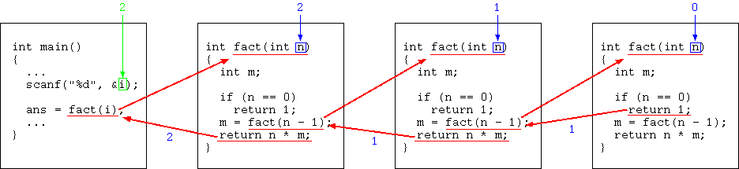 |
| fact(2)の実行が進むようす |
この図のように、呼出しが入れ子状になって連鎖して行くわけですが、この入れ子がどこかで止まってくれなければ困ります。n が負でないときは、fact(n) の呼出しの入れ子は無限に続きません。fact(n) が fact(n-1) を呼び、fact(n-1) が fact(n-2) を呼び、…という形で、引数が n, n-1, n-2, ... とだんだん小さくなって行くことがポイントです。そのうち必ず引数は0となり、fact(0) は fact を呼ばないので、入れ子は止まります。
一般的に、次の2条件を守ってプログラムを書けば再帰的なプログラムはきちんと終了します:
fact の場合、引数が負でない範囲ではこれらの条件が成り立っているので計算は止まります。
しかし、負の引数も含めると上の条件は成り立ちません。 n が負の場合に fact(n) を計算しようとすると、呼出しの入れ子がいくらでも深くなってしまいます。fact(-1) が fact(-2) を呼び、それが fact(-3) を呼び、…という形で、引数がどんどん負の方向に進んで行ってしまうからです。これは for 文や while 文の場合で言えば無限ループに相当する現象です。実際にプログラムを走らせてみると、無限に走り続けるわけではなく、エラーが発生します:
cc2001(106)% ./fact -1 セグメントエラー
エラーになる理由は、プログラムに与えられたあるメモリ領域を使いつくしてしまうからです。その領域は「スタック」と呼ばれており、一般に関数呼出しの入れ子が深くなるたびにスタック領域が消費されるようになっています。詳しくはコンピュータ基礎1・2で学びますので、ここではスタックについてこれ以上述べません。
数学が得意な人は次のような見方をしてみると再帰がわかりやすくなるかも知れません。 fact(n) を anと書くと、次のようになります:
これは、数列 a0, a1, a2, ... を定義する漸化式になっています。実は高校数学で習った漸化式というのは再帰的定義の一種と考えられます。あるいは逆に言えば、再帰的定義というのは、漸化式を一般化したようなものだとも言えます。「再帰呼出しをしないケースを作っておく」ということは、数列では初項を決めておくことに相当します。
再帰的なプログラムによって面白いグラフィクスを作り出すことができます。芸術的なグラフィクスがそのようにして作られているのをよく見ますが、ここではごく簡単な例をやってみましょう。見た目に面白いだけでなく、「再帰を使うと書きやすいがループでは書きづらいプログラム」の例にもなっています。
フラクタル図形と呼ばれるものの簡単な一例を描いてみます。次のプログラムは以下のような三角形の複雑な集まりを描きます。
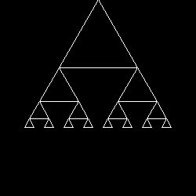
#include <stdio.h>
#include <eggx.h>
#define R3 1.732
int win;
void triangle(int n, float x, float y, float len) // void は値を返さないという意味。
{ // void についての詳細はあとの章で。
float left_x, left_y, right_x, right_y;
left_x = x - len/2.0; // 左下の頂点の x 座標位置
right_x = x + len/2.0; // 右下の頂点の x 座標位置
left_y = right_y = y - len/2.0*R3; // 両頂点の y 座標位置
// 三つの頂点を一周して三角形を描く
line(win, x, y, PENUP);
line(win, left_x, left_y, PENDOWN);
line(win, right_x, right_y, PENDOWN);
line(win, x, y, PENDOWN);
if (n < 1) {
return;
}
else {
triangle(n-1, left_x, left_y, len/2.0); // 再帰
triangle(n-1, right_x, right_y, len/2.0); // 再帰
}
}
int main()
{
int n;
float x=250.0, y=500.0, len=200.0;
win = gopen(500, 500);
printf("レベル = ");
scanf("%d", &n); // レベルを入力
triangle(n, x, y, len);
ggetch(win);
gclose(win);
return 0;
}
このプログラムを tri.c というファイルに記述し、egg -o tri tri.c によってコンパイルします。実行すると、レベルの入力を求められるので、0以上の整数を入力します。(負の入力は0と同じになります。)レベルが上がるに従って複雑なグラフィクスになります。実行結果を下に示します(タテ・ヨコを1/2に縮小してあります):
| 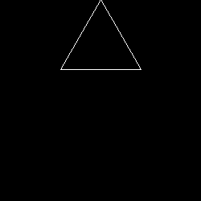 | 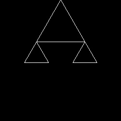 | 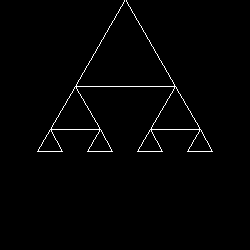 |
| レベル = 0 を指定した場合 | レベル = 1 を指定した場合 | レベル = 2 を指定した場合 |
| 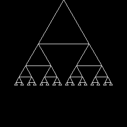 | 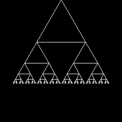 | |
| レベル = 3 を指定した場合 | レベル = 4 を指定した場合 | レベル = 5 を指定した場合 |
triangle(n, x, y, len) という関数は、(x, y) という点を頂点としてレベル n の図形を描きます。len は、頂点にある一番大きな正三角形の一辺の長さです。 レベル n の図形は次のようにして構成されています:
この構成のようすを n = 3 の場合に図示すると下のようになります:
| 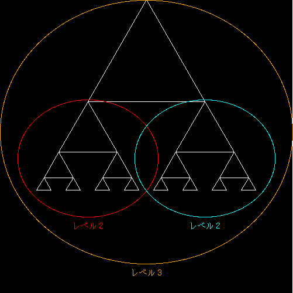 |
| レベル 3 図形の分析 |
この構成が理解できれば、関数 triangle の定義を理解するのは難しくないでしょう。 triangle(n, x, y, len) はまず頂点の正三角形を描きます。そのあと、レベルが (n - 1) で len が半分の図形を左隅と右隅に描きます。それにはもちろん再帰呼出しを使っています。ただし、レベル 0 の場合には、頂点の正三角形だけがあればよいので、再帰呼出しをしません。この関数が
という条件に従っていることを確認しましょう。これにより、再帰呼出しはきちんと終了します。
この関数は自分自身を2回再帰的に呼出します。1回しか再帰呼出しをしない関数は、再帰を使わずにループを使う形に書き直すことが容易な場合も多いのですが、一般に2回以上再帰呼出しをする関数は、再帰を使わない形に記述するのが面倒になる場合が多いです。
上の例をまねて、下のような図形を描くプログラムを書いて下さい。(下の図はタテ・ヨコを1/2に縮小してあります。)

|
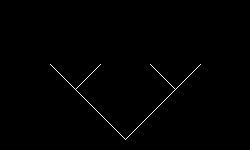 | 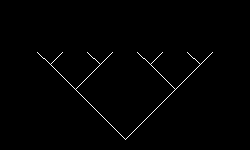 |
| レベル = 0 を指定した場合 | レベル = 1 を指定した場合 | レベル = 2 を指定した場合 |
| 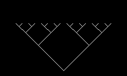 | 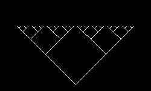 | 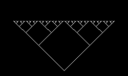 |
| レベル = 3 を指定した場合 | レベル = 4 を指定した場合 | レベル = 5 を指定した場合 |
下のプログラムを完成させる形で書けばよいでしょう:
#include <eggx.h>
int win;
void tree(int n, float x, float y, float len)
{
float left_x, left_y, right_x, right_y;
left_x = x-len; // 左の枝の上端の x 座標位置
right_x = x+len; // 右の枝の上端の x 座標位置
left_y = right_y = y+len; // 左右の枝の上端の y 座標位置
// 2本の枝を描く
line(win, left_x, left_y, PENUP);
line(win, x, y, PENDOWN);
line(win, right_x, right_y, PENDOWN);
if (n < 1) {
// ここを自分で書く
}
else {
// ここを自分で書く
}
}
int main()
{
int n;
float x=250.0, y=20.0, len=100.0;
win = gopen(500,300);
printf("レベル = ");
scanf("%d", &n);
tree(n, x, y, len);
ggetch(win);
gclose(win);
return 0;
}
演習1 で作ったプログラムを改造して、面白い図形を描くプログラムを作りなさい。 例えば、再帰呼出しの深さごとに線分の色を変える、枝分かれの角度を変化させてみる、乱数によって図形を変化させてみる、線分の代わりに円を描くなど、色々な工夫が考えられるでしょう。
|
ありそうな誤解として、最初の三角形を描くプログラムが、右図のような順番で三角形を描いていくものだと思っていないでしょうか？ つまり（再帰呼び出しをする度に）上から順に描いていくと。 間違った描き順の動画 （GIF アニメーション） |
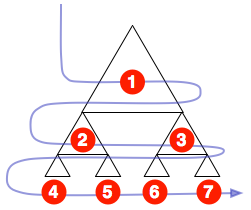 |
|
正しい描き順は右図のとおりです。 つまり三角形の外側の縁（へり）をたどりながら巡っていくような格好です。 |
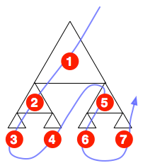 |
典型的な再帰呼び出しは、こうした仕事の進め方をします。 つまり「どんどんと深く」進んでいき、「最後まで（底まで）到達」したら「一段階戻って(return に相当)ふたたび深く進める」かどうか調べる、というものです。
「再帰呼出しの例」で登場した、図「fact(2)の実行が進むようす」を思い出して下さい。
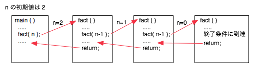
再帰呼び出しによってどんどんと深く呼び出され、終了条件に達すると戻ってくるようになっていました。 三角形の描画も同じく深く呼び出され、終了条件で戻ってきます。
ただし「少し左に（より小さな）三角を描く」処理を呼び出して、それが戻ってきたとき、 今度は（すぐ戻るのではなく）「少し右に（より小さな）三角を描く」処理をやってから戻ります。
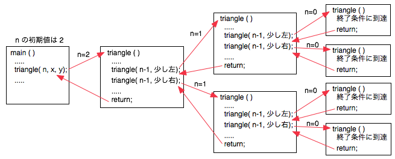
このような処理手順を経ているため、例題は「外側の縁（へり）をたどる」ような順で描画されます。 プログラム中では、その描画順とぴったり同じ格好で再帰的な呼び出し処理が進み、また戻っているのがイメージできたでしょうか。
この章の内容がうまく理解できた人向けに、より複雑な再帰呼び出しのケースを紹介しておきます。
ある関数f の定義の中に直接 f 自身の呼び出しが含まれていなくても、f が g を呼び出し、g が f を呼出す、というようになっていれば、再帰的な定義だと考えます。f の実行中にもう一度 f の実行に入る可能性があるからです。3つ以上の関数が互いを呼び出し合っている場合についても同様です。
| 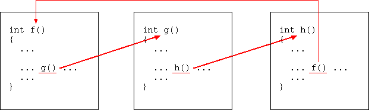 |
| 相互的な再帰 |
このような呼び出し関係と位置（プログラム記述中の上にあるか、下にあるか）にある関数を実際に定義して利用する場合は、この次の単元である「関数プロトタイプ」を理解し、その作法に従って記述する必要があります。
再帰呼び出しを用いるのが都合良い場合は、上の例や下の図のような自己相似的な図形の描画、また再帰的な定義が処理に現れているような場合がありますが、実際のプログラミングの場面ではそれが適する場面になかなか遭遇しないかもしれません。
| 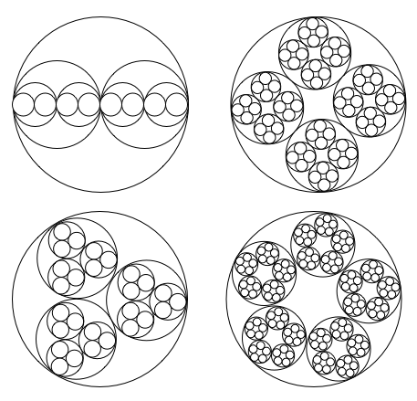 |
| 自己相似的な図形の描画 |
もうひとつ、再帰的な記述がうまく利用できる場面として探索処理があります。 「この条件に当てはまるものを次々とたどりながら処理を行う」ような処理で、こうした作業が必要な場合はときどき発生します。 以下に示した迷路のようなパターンのなかで、隣接する（たどれる）通路の領域だけをぬりつぶしていく、といった処理が該当します。
| 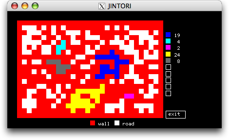 |
| 探索を行うサンプル |
この塗りつぶしプログラムでは、「自分の上下左右の通路を塗るよう試み、そこが塗れる（通路だった）場合には再びその場所の上下左右を塗るように再帰的に呼び出しています。 たとえばプログラムは以下のような記述になります。
void gomap(int p, int w, int h)
{
if(map[w][h] != -1 ) return; // そこは通路じゃないので行けません
map[w][h]=p; // 塗れたので自分の色で染めておく
gomap(p, w-1, h); // 左
gomap(p, w+1, h); // 右
gomap(p, w, h-1); // 上
gomap(p, w, h+1); // 下 を塗るように試みる
return;
}
塗れればどんどん上下左右に進める。塗れなかったら単に戻る。 この簡単な記述で「しらみつぶしに踏めるところをぜんぶたどる」処理が実現できていることが納得できるでしょうか？
JINTORI : 再帰処理のサンプル に動作するプログラムがありますので参考にすると良いでしょう。
（プログラムは比較的長いですが、ほとんどはグラフィクスを描くためのもので、本来的な処理はひどく簡単です。
全体が長いからといってあきらめずにザーッと軽く眺めてみてください。
実はユーザインタフェイスのあるプログラムというのは皆こんなもので、ユーザとの対話処理にプログラムのほとんどが費やされ、本来やりたい処理というのは相対的には小さなものになります。）